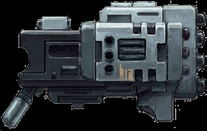
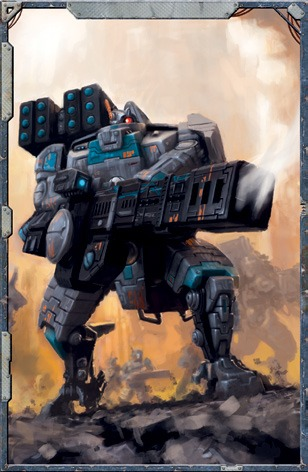

战斗服能够在不牺牲机动性的情况下安装对普通步兵来说太大而无法使用的武器。一名身着战斗服的熟练驾驶员可以独自携带比几乎任何其他独狼战士更多的火力，并且可以使用这些致命的武器来对付和消灭那些没有重型载具支持的钛族人无法单枪匹马击倒的敌人。一般情况下，战斗服武器系统只能由探索者在战斗服中使用，并且有些通常只能装载到更大型的战斗服上。
等离子步枪
使用与帝国等离子武器类似的原理，钛族等离子步枪使用浓缩迸发的超高热气体来摧毁其目标。一般来说，钛族等离子武器通过降低气体的整体温度来牺牲少许火力的做法使得比帝国同类武器更加安全。这消除了困扰着等离子武器等鲜为人知的考古技术遗迹的过热问题，但也导致武器的总体伤害输出略低。这些武器只安装在钛族战斗服上，因为只有它们可以轻松使用如此庞大的武器。
空爆榴弹发射器
作为一把最近获得战场使用的优雅的武器，空爆榴弹发射器发射近距离引爆的爆炸弹丸。通过连接到战斗服的传感器套件，驾驶员能够精确的确定射击角度，以便在射程内的任何目标上取得最佳效果。射弹会在目标上方的空中爆炸，使该区域充满致命的破片。这种武器在对付集结的步兵团和隐藏在掩体后面的部队时显示出巨大的成功。
使用空爆榴弹发射器进行的攻击会忽略目标来自掩体的所有护甲点。
脉冲速射炮
基于与脉冲步枪及其相关变体相同的等离子脉冲产生技术，脉冲速射炮是一种具有极高射速的多管突击武器。通常安装在钛族的隐形战斗服上，这种炮的射程相对较短，但它能够对轻型装甲部队造成大规模伤亡的能力已经远远重要于它的这个缺点。
重型脉冲速射炮
标准脉冲速射炮的超大型版本，重型脉冲速射炮发射等离子射弹的方式与钛族脉冲武器大致相同。它的六个旋转枪管使其能够保持前所未有的射速，甚至可以通过利用XW104的新星反应器进一步过载。
重型脉冲速射炮是一种真正巨型的武器，能够喷出炽热的火焰。通常，它不能安装在比强大的X104激流更小的战斗服上。
循环离子炮
一种结合了脉冲速射炮和离子步枪设计的实验性武器，这种四管武器可以发射出一阵能够歼灭轻装甲部队的离子辐射高速弹雨。然而，该设计并不完美。尽管射速稳定，但离子辐射仍然相当难以预测，导致其对抗装甲单位时效能飘忽不定。
相位离子炮
相位离子炮代表了一种试图缩小车载离子炮的尺寸，从而创造出用于战斗服的量产版本循环离子炮的尝试。这些双管炮通常悬挂在X9的手臂下方，并且已被证明对装甲步兵和载具等单位都是致命的。
离子加速器
钛族离子武器能够射出高能粒子流。将目标炸开，只在他们的尾迹后留下一个阴燃的大洞。然而，离子加速器的爆炸更像是一股洪流，其足以完全融化它的目标。这种巨大的武器可以轻松地洞穿装甲防御工事，并且可以通过从X104的新星反应器中汲取额外的能量来进一步增强其杀伤力。
一门离子加速器是巨大的，能够在瞬间将整个重装士兵小队变成熔渣。任何试图将这种武器安装在比X104激流更小的任何框架或底盘上的尝试都将是一件愚蠢的差事。
导弹舱
专门安装在钛族战斗服上，导弹舱这种武器技术被钛族用来与轻型载具交战。虽然没有卡拉克弹头那么强大，而且没有破片导弹那样的伤害半径，但钛族导弹仍然非常危险。通过快速射击的能力，他们可以轻松地粉碎步兵运输车、掠行器和其他类型的轻型载具。
集束导弹舱
集束导弹舱比它们那些小型化的同行更加强大，能够击碎更重的装甲载具并将飞机从空中撕裂。
智能导弹系统
只要使用智能导弹系统的探索者知道对手的位置，他就不需要看见他们。智能导弹系统能够追踪目标的大致位置，并且可以绕过掩体飞行，这为钛族驾驶员提供了令人难以置信的战术灵活性，帮助他将战壕中的敌人赶出掩体。
只要使用智能导弹系统的探索者知道对手的位置，他就不需要进行一次挑战难度的(+0)智力检定，以代替他在攻击动作中会进行的任何弹道技能检定。
融合炮
与帝国的热熔武器的设计和效果相似。融合炮会搅动目标的亚原子粒子，从而导致大量热量的积聚。有生命的目标通常会被完全汽化，而无生命的目标则会被还原为熔渣。这些武器通常会被部署在隐形服上，让钛族驾驶员可以攻击敌方载具暴露的后部装甲或进行闪电袭击以摧毁重要的防御工事。
融合之刃
一种只有在远见飞地的战士手中才能看到的罕见圣物，融合之刃可以让战士将融合炮的效果汇聚在一段近距离内，用纯能量制成的致命刀刃灼碎敌人。融合之刃有着巨大的效用，但对于钛族技术而言是出了名的不可靠，经常在致命的战斗中突然四溅散开，让他们的持用者手无寸铁。一柄融合之刃只要还保持正常功能，就同时可以作为融合炮发射。如果一名探索者使用融合之刃时遭遇了武器技能检定失败，并且失败度大于他的武器技能加值，则它会停止工作并且在修复之前不能使用。
融合喷射炮
该武器是标准融合炮的改装版本，以其原本的出力换取了大大提高的射速，该武器专为与更大的X9灾害战斗服共同使用而设计。融合喷射炮释放出汹涌的能量洪流，轻松的洞穿盔甲，并将其路径上的其他一切化为纷飞的灰烬。
重型磁轨步枪
作为磁轨步枪更大更残暴的表亲，重型磁轨步枪是一种反装甲加农炮，用于从远距离摧毁敌方载具或从其有效射程之外撕裂大量生物的肢体。这种毁灭性武器通常安装在X88舷炮战斗服上，因为只有这些X8危机战斗服的改进型才能有效地射击如此巨大的武器。
重弩拳套
一种由土氏族在急需的时刻创造的实验性技术，重弩拳套是一种为数不多的设计用于危机战斗服的近战武器之一。这些设备从一开始就数量很少，并且几乎所有都在使用后丢失在战场上。
重弩拳套不能发动迅捷攻击或闪电快攻动作。

